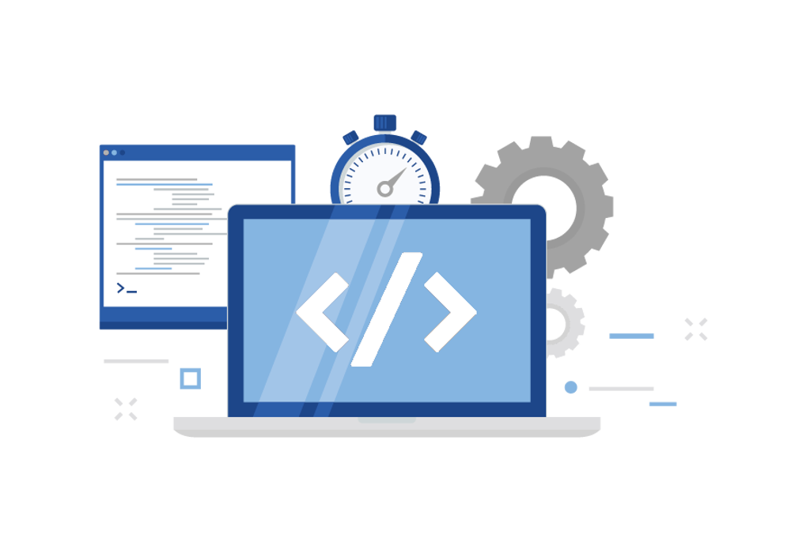

Desarrollo de
Software
Este blog está diseñado para profundizar en las actividades clave del desarrollo de software, desde los modelos de desarrollo hasta las metodologías ágiles más utilizadas en la industria. A lo largo de este blog, exploraremos cómo cada modelo y metodología impacta en el proceso de construcción de software, facilitando su planificación y ejecución eficiente.
